Repaso de la Tanda 10S7
La batería de pruebas en 0 fallos de una pasada (tres veces seguidas y en 35 minutos), la descarga más ligera, las zonas de toque de 44 px y los retoques de la 10N12. Marca cada punto en tu teléfono cuando lo hayas comprobado (se guarda en este navegador).
0 · Antes de empezar ✅ Hecho — Prompt guardado, Design ya al día (10S6), nota de estado cada 30 minutosMotor: no se ha tocado shared/routeEngine ni la generación de la ruta inicial (ni siquiera reorganizarDia.js). Dónde: No es de móvil. 0b · Respuestas a la 10S6 ✅ Hecho — Miniaturas de las entradas con la foto del sitio (la de la parada); el degradado solo sin fotoComprobado por código y prueba, no a ojo en el móvil. Dónde: RESERVAS > Entradas y Free Tour, viaje a Roma con fotos. ✅ Hecho — La traza de React sobre ReservasPanelNo es un fallo de la app: es un aviso de framer-motion (useLayoutEffect) al pintar sin navegador en las pruebas. Filtrado en _ssr.mjs. Dónde: No es de móvil. ✅ Hecho — pruebaTanda7_conexion, pruebaTanda7_ficha y repaso10N9 al día en 0 fallosTambién pruebaTanda7_mover (fechas enteras). Dónde: No es de móvil. 1 · Toda parada nueva, la primera del día ⚠️ A medias — Toda parada que se añade a un día o se pasa a otro va la primera y se ilumina; «Añadir entre dos paradas» se queda donde se pone; una reserva que ya está en su día no se mueve; el Free Tour reservado en otro día pasa a ese día de primero sin tocar otrosNo se ilumina cuando una reserva (Free Tour o entrada) trae la parada de otro día de forma automática (dependencia circular entre stores). El «+» de la cabecera de franja y el del hueco entre tarjetas los traté como «entre dos paradas»; «Más visitas» de HOY y la ruta a mano no se tocaron. Fuera la regla vieja «con pase, donde mejor encaja». Dónde: EXPLORAR > «+», DÍAS > «+ Añadir parada», «⋯» > Mover a otro día; con y sin pase. 2 · El botón «Reorganizar» del pase ✅ Hecho — Botón flotante redondo encima del de logros, solo con pase, que sale solo si reorganizar cambiaría algo, tras añadir/pasar parada, hora de entrada o Free Tour, vuelos o zona del alojamientoSolo para quien puede editar. Dónde: Cuenta con pase, DÍAS: pasa una parada a otro día. 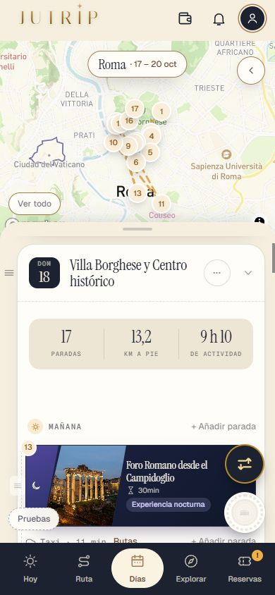
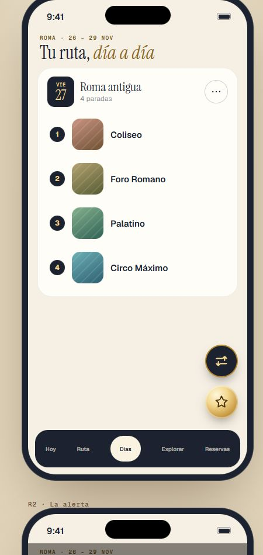
✅ Hecho — Alerta «¿Reorganizamos tu día?» con [Reorganizar] y [Ahora no] (que esconde el botón hasta el próximo cambio)La alerta no se miró a ojo, solo en la prueba (textos y botones). Dónde: Tocar el botón. 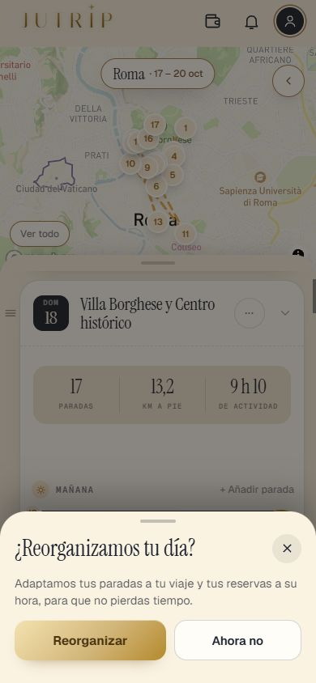
⚠️ A medias — Reorganizar: solo los días afectados, no quita nada, reservas a su hora; franja «Hemos reorganizado tu día» con [Deshacer] e iluminar lo movidoEl orden NO considera los cierres de cada día (cuándo cierra un museo): hacerlo sería tocar el motor y pasarle la fecha, y lo dejé. Usa la regla de siempre: nuestros días escritos, cercanía y reservas a su hora. Dónde: Tras tocar [Reorganizar]. 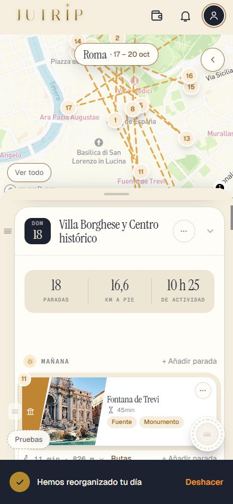
✅ Hecho — «Reorganizar este día» en el menú «⋯» del día (el nuestro), solo con paseSe quitó el botón viejo del final del día (ya vive en el menú). Dónde: DÍAS > «⋯» del día, con pase. 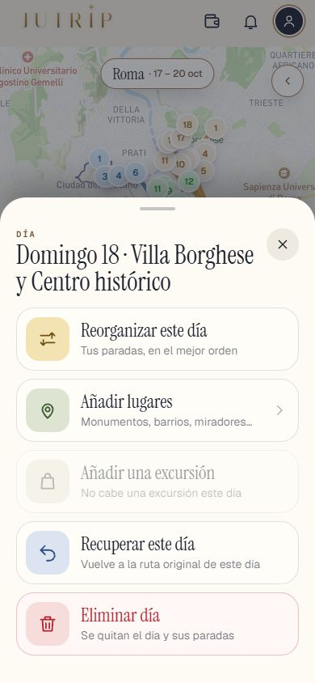
⚠️ A medias — Nada se reorganiza solo (tampoco el vuelo al guardarlo)Quité lo que se recolocaba solo con el pase: al cambiar la hora o el punto del vuelo, o la zona del alojamiento, la app rehacía la ruta entera (rehacerPorCambioDeVuelo). CONSECUENCIA: ya no se actualiza solo lo que el motor calculaba con la hora del vuelo (el plan de llegada y de vuelta, «Hoy vuelves a casa», el resumen del vuelo), y el reorganizador no mira el vuelo. Dime si lo echas de menos y cómo quieres ofrecerlo. Una reserva grande en otra fecha sigue moviendo el día entero (regla 6j) y quitar una reserva sigue rehaciendo: no lo toqué. Dónde: Guardar el vuelo con pase: no se mueve ninguna parada. ⚠️ A medias — Viaje compartido: solo quien puede editar, y un solo aviso a los demás («Eric ha reorganizado el jueves 26»); sin pase, el botón no sale nuncaLa frase y la acción única se comprobaron en la ruta, no entre dos móviles reales; «sin pase» se probó cambiando la versión por la dirección, no con una cuenta sin pase de verdad; quien solo recomienda no lo ve está en el código sin prueba de navegador. Dónde: Dos móviles en un viaje compartido; cuenta sin pase. 3 · Las entradas con su billete ✅ Hecho — [Añadir tu entrada] desde PDF, foto o captura (lee día, hora, personas y localizador y guarda el código); con billete, código pequeño «Toca para ampliar»; pantalla completa; cambiar a manoSin tabla ni migración nuevas: vive en billetes_personales (0070), datos.entradas[refId]. La lectura con IA de una entrada real no se ha probado contra Claude (gasta cuota): prueba con una entrada real. Al quitar una reserva por otros caminos su billete queda guardado pero oculto. Dónde: RESERVAS > Entradas y Free Tour > una entrada reservada o «Añádela»/«Cambiar». 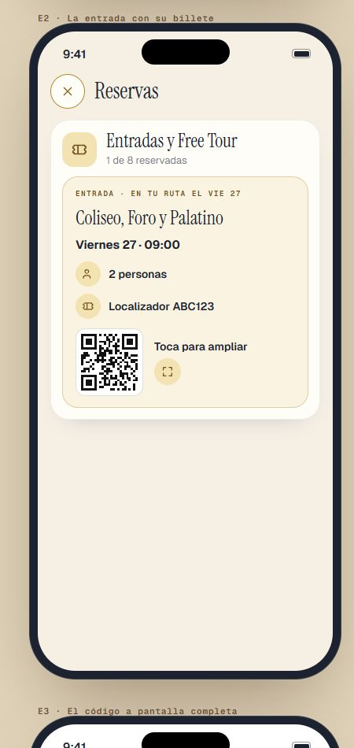
✅ Hecho — Con pase, en HOY, en la parada de ese sitio, la fila «Tu entrada» con el código pequeño que abre a pantalla completa; privado y sin internetSin pase no sale (comprobado). En la pantalla antigua de HOY sale bajo la franja verde. Dónde: HOY, día del viaje, con pase; modo avión. 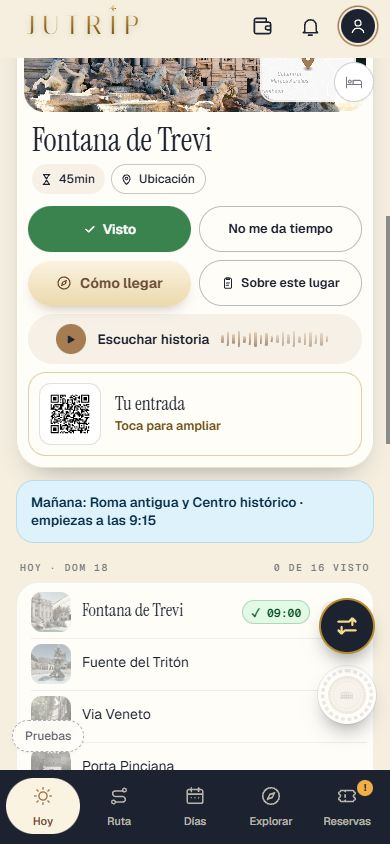
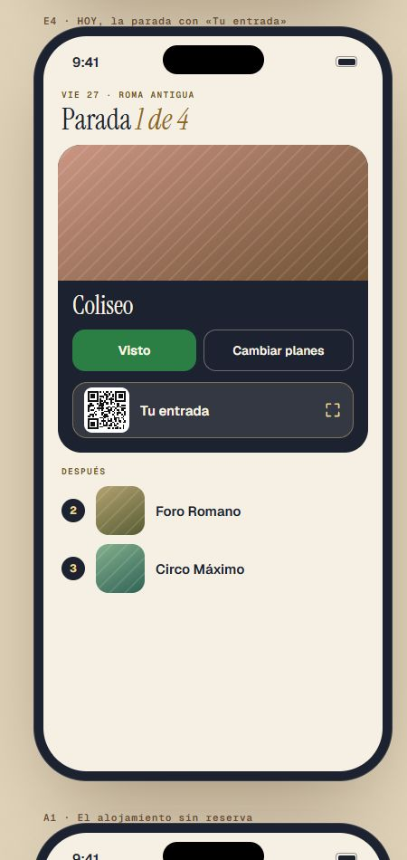
4 · El botón del código en «Entradas y Free Tour» ✅ Hecho — En las entradas reservadas, el botón redondo del código que abre la pantalla completa, solo si esa entrada tiene billeteVa encima de «Cambiar». Dónde: RESERVAS > Reservadas. 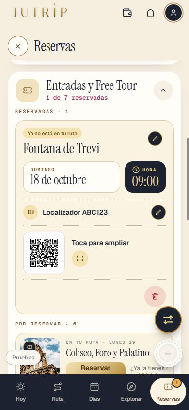
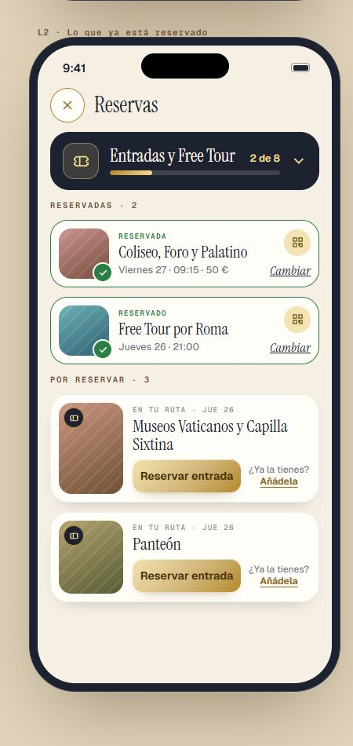
5 · El alojamiento con su reserva ⚠️ A medias — [Añadir tu reserva] desde PDF, foto o captura: lee nombre del hotel, dirección, fechas y noches, hora de entrada y de salida, teléfono y localizador; sin código; cambiar a mano; si la dirección es distinta, pregunta antes (con pase)La lectura real con Claude no está probada con una confirmación de hotel real. La reserva se guarda dentro del alojamiento (sin tabla ni migración): la ve quien ve el viaje, no es privada por persona (el prompt no lo pedía). Dónde: RESERVAS > Alojamiento, con un alojamiento puesto. 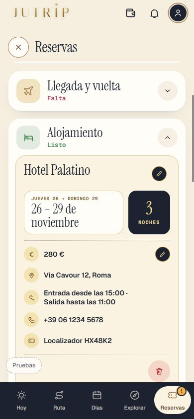
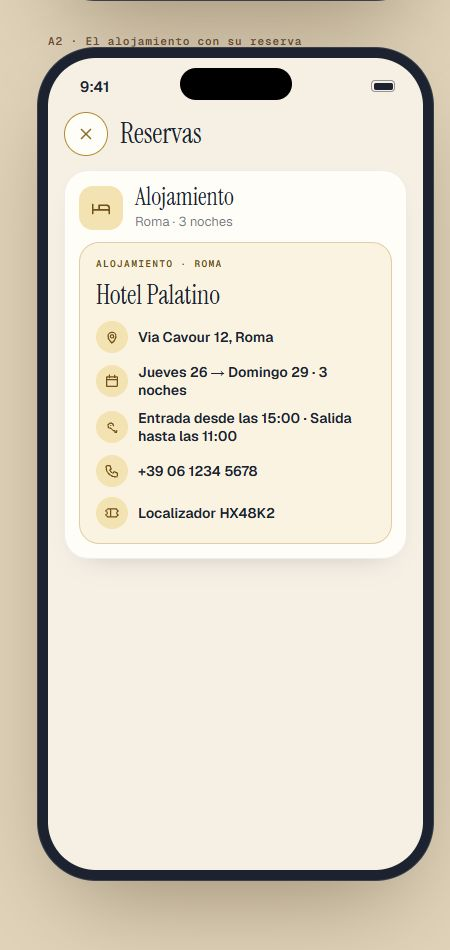
✅ Hecho — Cabecera del bloque sin línea bajo el título; dentro, precio con «Cambiar», «Eliminar alojamiento» abajo a la derecha y, con pase, zona, dirección y [Cómo llegar]Dónde: RESERVAS > Alojamiento. 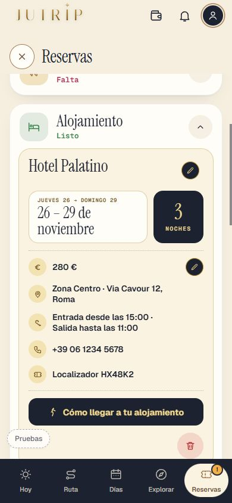
6 · La lista del pase ✅ Hecho — «Tu día, reorganizado en un toque» tras «Tu ruta se adapta a tu vuelo»Verdad porque el botón funciona. También en data/pase/incluye.json. Dónde: Hoja de la lista del pase. 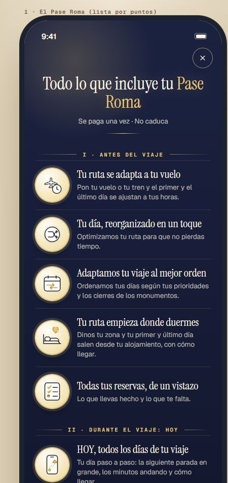
⚠️ A medias — «Adaptamos tu viaje al mejor orden» en lugar de «Los días, en el mejor orden»El motor sí ordena los días por la llegada, la vuelta y los cierres/fechas malas, pero lo hace también la ruta gratis y no existen «prioridades» del viajero: la frase queda «Ordenamos tus días según tu llegada, tu vuelta y los cierres de los monumentos.» (no la de Design). Decide si te vale. Dónde: Hoja de la lista del pase. 7 · «Empezar de cero» no devuelve las pruebas ✅ Hecho — Migración 0072: hoy_prueba e historia_de_prueba no se borran; COMPROBAR_0072.sql; pruebaTanda10J al día (falla con la 0072 mala)POR APLICAR: 0072 en el SQL editor y pegar COMPROBAR_0072.sql («Aplicada»). COMPROBAR_0071 pasa a decir «FALTA» con la 0072 aplicada, a propósito. Pendientes tuyos: el diálogo de Empezar de cero aún dice «el día de prueba» y «Reiniciar mis pruebas» del panel de administrador (reiniciar.js) sigue borrando hoy_prueba. Dónde: SQL editor. 8 · La prueba ✅ Hecho — pruebaTanda10S7 (Q, R, S, T), pruebaTanda10J y pruebaJutrip, más las antiguas tocadasDónde: No es de móvil. Todas las capturas
10s_aviso_375x667 10s_cama_dia_de_prueba 10s_lista_x_375_final 10s_lista_x_final 10s_lista_x_medio 10s_mis_viajes_fechas 10s_toque_ajustes_antes 10s_toque_ajustes_despues 10s_toque_cama_antes 10s_toque_cama_despues